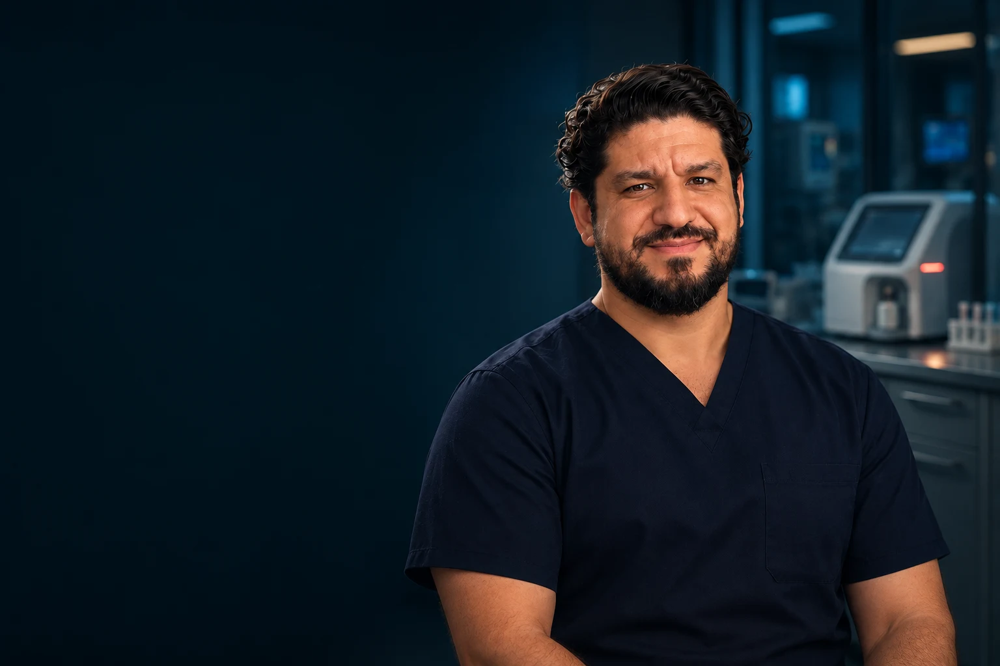

Fundamentos que importam
pH, PaCO₂, bicarbonato e excesso de bases.

Dr. Anderson Gleryston CRMPB 14580
CURSO ONLINE · EM PRODUÇÃO
Aprenda a ler, interpretar e conectar a gasometria às decisões do plantão.
Quero ser avisadoPara internos, recém-formados e médicos
que atuam no plantão.
Da coleta à reavaliação: um caminho completo para transformar dados em raciocínio clínico.
O QUE VOCÊ VAI APRENDER
Fundamentos, interpretação sistemática e decisões conectadas à realidade do paciente.
PROGRAMA PROPOSTO · 12 EIXOS DE APRENDIZADO
pH, PaCO₂, bicarbonato e excesso de bases.
Gasometria arterial e venosa, indicações e erros pré-analíticos.
Um método sistemático conectado ao contexto clínico.
Ânion gap, correção pela albumina e análise do delta.
Causas, cloro, volume e interpretação integrada.
Acidose e alcalose respiratórias: formas agudas e crônicas.
Reconheça quando mais de um processo está presente.
PaO₂, relação PaO₂/FiO₂ e gradiente alvéolo-arterial.
Integre os resultados à avaliação do paciente.
Introdução a Stewart e ao gap osmolar.
Raciocínio sobre fluidos, eletrólitos, bicarbonato e suporte ventilatório.
Sepse, cetoacidose, DPOC, insuficiência renal e intoxicações.
APRENDA DECIDINDO
Proposta de atividades: AgoraQuiz e Plantão Virtual.
Curso em produção. O programa e as atividades apresentados serão desenvolvidos progressivamente.

QUEM VAI GUIAR SEU APRENDIZADO
CRMPB 14580
Médico e educador. Conhecimento conectado às situações e decisões da prática clínica.
Conheça minha históriaACOMPANHE O LANÇAMENTO
Curso em produção. Acompanhe as novidades da AgoraMed.
Quero ser avisadoEnvie seu interesse por e-mail para acompanhar o lançamento.
Se preferir, escreva para drandersongleryston@gmail.com.